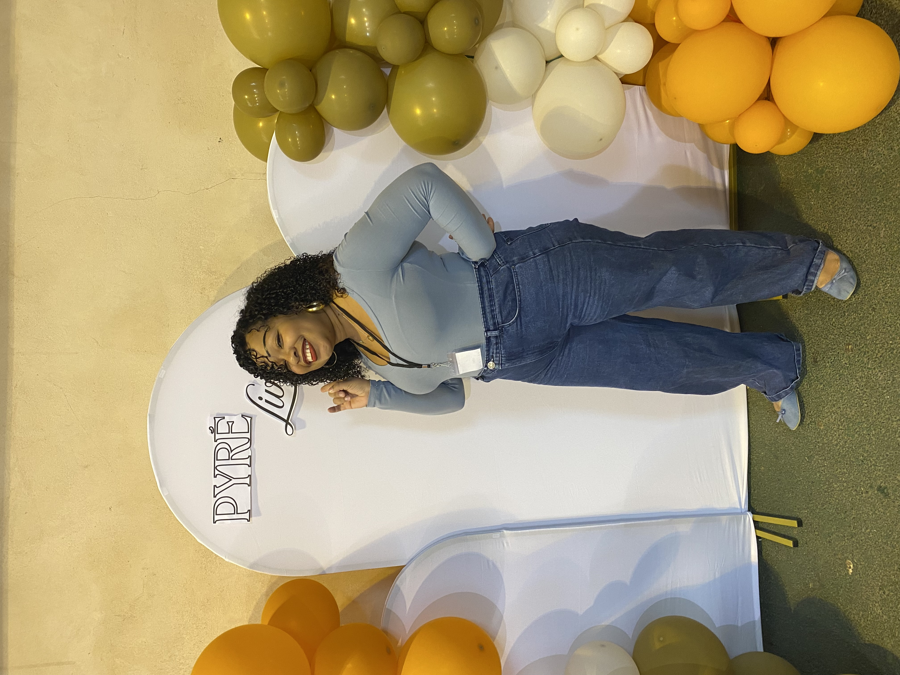

De Thuit Romance à Pyrélivres : des rencontres, des sourires et de belles histoires.
Et me voilà de retour dans mon blog ! Je viens d’enchaîner la rentrée et surtout pas moins de deux salons pendant les vacances. Il s’agissait du salon Thuit romance ainsi que du salon Pyrélivres. Deux lieux. Deux ambiances. Cependant, j’y ai retrouvé la même entraide et la même chaleur dans les deux. Là où Thuit est consacré à la romance sous toutes ses formes, Pyrelivres est généraliste. C’est une première pour moi !
Je pense qu’il ne faut pas hésiter à chiner dans ces salons, même quand on se dit qu’on ne va pas trouver ce qu’on aime lire. Les découvertes sont très intéressantes. J’y ai acheté le livre Héritage de Benito Sanchez. Moi qui adore Stephen King, on est plongé dans un univers à la Shining des plus flippants. Je vous dirai ce que j’en ai pensé.
Aujourd’hui, je suis heureuse ! Je viens de recevoir une très belle nouvelle dont je vous reparlerai par la suite…